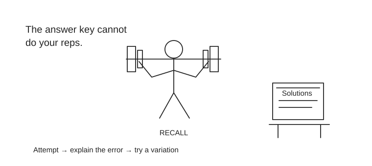

Use official questions for exam calibration and original exercises for diagnosis. This page links legitimate sample papers and full mock access; it does not reproduce paid question banks.
Valuation reasoning and modeling; use solutions only after an independent attempt.
Original finx diagnostic · 20 questions
Allow 30–40 minutes, answer closed-book, then reveal explanations. Two questions per broad topic provide a quick gap check. This is not an official CFA mock, does not reproduce its topic weights or difficulty, and cannot predict a pass. Keep answers on paper; there is no progress tracker.
1. Ethics
A researcher obtains material, nonpublic earnings information. What is the appropriate next action?
Trade before the announcement
Avoid trading or recommending on it and follow compliance procedures
Share it with selected clients
Answer and explanation
B. Information being useful does not make it usable. Protect confidentiality and follow the firm’s controls; do not trade or recommend based on material nonpublic information.

Looking at a solution creates recognition. Working without it tests whether you can retrieve and apply the idea.
2. Ethics
Which presentation most fairly communicates a tested strategy?
Show only the best of 100 variants
Describe selection, costs, limitations and out-of-sample results
Call a backtest a guaranteed return
Answer and explanation
B. The decision-maker needs the research process and limitations, including multiple testing and realistic costs.
3. Quantitative Methods
What is the present value of ₹121 received in two years at 10% annually?
₹100
₹110
₹121
Answer and explanation
A. PV = 121 / 1.1² = 100. Both periods must be discounted.
4. Quantitative Methods
A return is +10% or −10%, each equally likely. Its expected return is:
−1%
0%
10%
Answer and explanation
B. Arithmetic expectation is 0.5×10% + 0.5×(−10%) = 0%. This is not a claim that repeated compounding has zero loss.
5. Economics
Nominal return is 6% and inflation is 4%. The exact real return is closest to:
2.00%
1.92%
10.00%
Answer and explanation
B. (1.06 / 1.04) − 1 = 1.923%. Subtracting rates is only an approximation.
6. Economics
A price rises 5% and quantity demanded falls 10%. Using percentage-change elasticity, demand has absolute elasticity:
0.5
2.0
5.0
Answer and explanation
B. |−10% / 5%| = 2. Demand is elastic under this calculation; causality and the chosen measurement method still matter.
7. Financial Statement Analysis
A cash purchase of equipment for ₹50 initially:
Reduces cash and increases property/equipment
Reduces profit immediately by ₹50 in every case
Increases revenue
Answer and explanation
A. The transaction swaps cash for an asset. Subsequent depreciation affects profit; capitalization criteria and accounting rules matter.
8. Financial Statement Analysis
Current assets are ₹200 and current liabilities ₹100. The current ratio is:
0.5
1.0
2.0
Answer and explanation
C. 200 / 100 = 2. A ratio alone does not establish the quality or liquidity of every current asset.
9. Corporate Finance
Pay ₹100 now and receive ₹60 at each of the next two year-ends. At 10%, NPV is closest to:
−₹4.13
₹4.13
₹20.00
Answer and explanation
B. −100 + 60/1.1 + 60/1.1² = 4.132. The undiscounted surplus of 20 is not NPV.
10. Corporate Finance
A firm has 60% equity costing 12% and 40% debt costing 6%. With a 25% tax rate, WACC is:
9.0%
9.6%
12.0%
Answer and explanation
A. 0.6×12% + 0.4×6%×(1−25%) = 9%. This assumes the stated weights and usable interest tax shield.
11. Equities
Next year’s dividend is ₹5, perpetual growth 3%, required return 8%. Constant-growth value is:
₹62.50
₹100
₹166.67
Answer and explanation
B. D1/(r−g) = 5/(0.08−0.03) = 100. The model requires r greater than g.
12. Equities
A share costs ₹240 and annual earnings per share are ₹12. P/E is:
12×
20×
24×
Answer and explanation
B. 240/12 = 20. Growth, accounting and risk can explain differences between firms’ multiples.
13. Fixed Income
A one-year zero-coupon bond pays ₹100. At a 5% annual yield, price is closest to:
₹95.24
₹100
₹105
Answer and explanation
A. 100/1.05 = 95.238. A zero coupon has no interim coupon cash flows.
14. Fixed Income
Modified duration is 4. Yield rises by 0.5 percentage points. Approximate price change is:
+2%
−2%
−20%
Answer and explanation
B. ΔP/P ≈ −Dmod×Δy = −4×0.005 = −0.02. This first-order estimate ignores convexity.
15. Derivatives
A call has strike ₹100 and premium ₹7. At expiry the underlying is ₹120. Profit before fees is:
₹13
₹20
₹27
Answer and explanation
A. Payoff max(120−100,0) = 20; profit = 20−7 = 13, ignoring financing and transaction costs.
16. Derivatives
An investor agrees to buy an asset through a forward at ₹90. At expiry spot is ₹100. Long-forward payoff is:
−₹10
₹0
₹10
Answer and explanation
C. ST−K = 100−90 = 10 per unit, before other costs.
17. Portfolio Construction
Two equally weighted assets have 20% volatility each and zero correlation. Portfolio volatility is closest to:
10%
14.14%
20%
Answer and explanation
B. Variance = 0.5²×0.2² + 0.5²×0.2² = 0.02. Its square root is 0.1414.
18. Portfolio Construction
Portfolio return is 10%, risk-free return 2% and volatility 16%, all measured on a consistent basis. Sharpe ratio is:
0.5
0.625
2.0
Answer and explanation
A. (10%−2%)/16% = 0.5. Interpretation also depends on return distribution and the estimation period.
19. Alternative Investments
An investor may need cash next month. Which characteristic is a concern in a locked-up private fund?
Daily liquidity
Limited redemption access
A published asset name
Answer and explanation
B. A lock-up can prevent access when cash is needed. Expected returns do not remove the liquidity constraint.
20. Alternative Investments
A private investment is valued infrequently. Low reported volatility necessarily proves low economic risk:
True
False
Only if returns are positive
Answer and explanation
B. Infrequent or smoothed valuations can understate measured volatility; business and liquidity risks remain.
Turn a score into a repair plan
For each mistake, record the concept, your mistaken reasoning and one rule that would prevent it. Classify errors as knowledge, setup, arithmetic or time pressure. Reattempt with changed numbers after two days. Use full official mocks under current exam timing once you have covered the syllabus.